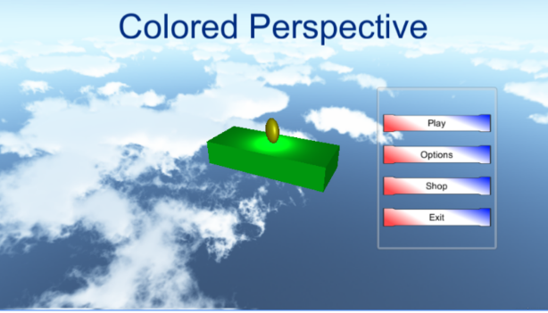

Aenean ornare velit lacus, ac varius enim ullamcorper eu. Proin aliquam facilisis ante interdum congue. Integer mollis, nisl amet convallis, porttitor magna ullamcorper, amet egestas mauris. Ut magna finibus nisi nec lacinia. Nam maximus erat id euismod egestas. By the way, check out my awesome work.
FBLA Road to NLC Fundraising
FBLA Road to NLC Fundraising is an app I created for my FBLA Competition in 2017. The challenge given was to create an app that would all for raising funds in order to attend the National Leadership Conference. The application as a whole has a total of three parts: the App itself, the server, and the database. All of these components come together to create the complete app experience.
Caring Cookie Club
Caring Cookie Club is an app I created for a local elementary school club as well as my senior project. The app is a place where people can give each other “cookies”, compliments essentially, to promote kindness in schools.
POS System
Point of sale tracking system in an app to keep track of customers’ balances in an account. You can configure set increments of money for quick access, or you can enter a custom amount each time.
Flash Drive Backup
Flash Drive Backup is a .net application that runs in the background and allows you to configure backups of removable drives each time you plug it in. This project is based off and adapted from this project and another project that i can no longer find at this time.
K95 Keyboard Image Overlayer
K95 Keyboard image Overlay allows you to select an image and put it onto the K95 keyboard. Once an image is selected the program has different ways of calculating the color for each key, such as brightness, most occurring color, and average color. You can export just the lighting to copy and paste into an existing profile in the Corsair Utility Engine (CUI) of export and entire profile for a quick import.
Vectricity
Vectricity has a long history. Originally this game started out in XNA Game studio, and was developed in my Programming II class at school. Soon after my team and I decided that we were going to use it for out 2016 FBLA Project in Computer Game and Simulation Programming. In order to get the refinement that we wanted for the competition, I decided to port it to Unity game engine. We received 2nd place at the state competition.
Vectricity is a 2D arcade style shooter. There are different types of enemies that are capable of different attacks. There are also many different weapons that can each be used to counter the enemies. You are able to drop different items on the ground, to help you, like turrets or area of affect zones that set enemies on fire or slow them down.
Paintwall
Paintwall is a simple game where you have to try and get the colored balls into the correctly colored goal. The goals rotate around the screen for extra challenge. There are different game modes; Easy, normal, endless, hardcore, and flawless. In hardcore the goals rotate faster than on normal, and in flawless one wrong goal will cost you the game.
Colored Perspective

Colored perspective is a platformer that gets its name entirely due to the game mechanics. You are a colored ball that has to jump between the different colored platforms, changing your color while in midair so that you match the color of the platform, otherwise you will break the platform and fall to your death. As you move linearly down the randomly generated course, the camera only moves when you get very far away, creating a stretched perspective that will have you guessing when to jump to the next platform.
Static Evolution
Static evolution is a game that is still being worked on occasionally. The basic idea is that it would be similar to chess, but on a hexagonal grid. You would be able to sit your pieces around other objects on the map to “evolve” them into better pieces. Since I started on it, it has become more of a learning ground to play with hexagonal tile maps and tile orientation for graphics.
Word Lookup
This is something that I created because I was tired of wasting valuable time googling lists of things when I could have an application do it for me. The name is somewhat misleading, as it is capable of looking up more than just words. It essentially just opens a new chrome tab with a search for each item that you gave it. Then you can go from tab to tab gathering information much more quickly instead of stopping to search every time. This concept has stemmed many of my other projects that expand on this and refine it.
Homework Master
Homework Master is the final combined version of APUSH Master, Vocab Master and Timeline Tool all in one app for easy accessibility. It includes all of the features of those and a few more.
APUSH Master
APUSH Master is a tool that I created when I was taking AP US History. Often googling many different APUSH terms I wanted a place where I could get all the information I needed in one place, instead of scouring google one page at a time.
Vocab Master
Vocab Master is a tool I created to automatically get the definitions for vocabulary words. It can also get synonyms and antonyms for the words as well.
Timeline Tool
Timeline tool simply puts a list of dates in Chronological order to make making a timeline easier.